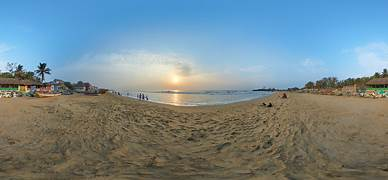

Chennai formerly known as Madras, is the capital city of Tamil Nadu, the southernmost Indian state. It is the state's largest city in area and population, and is located on the Coromandel Coast of the Bay of Bengal.

| Employee No | Employee Name |
|---|---|
| 101 | Jeeva |
| 102 | Vishal |
WHO is a Government organisation